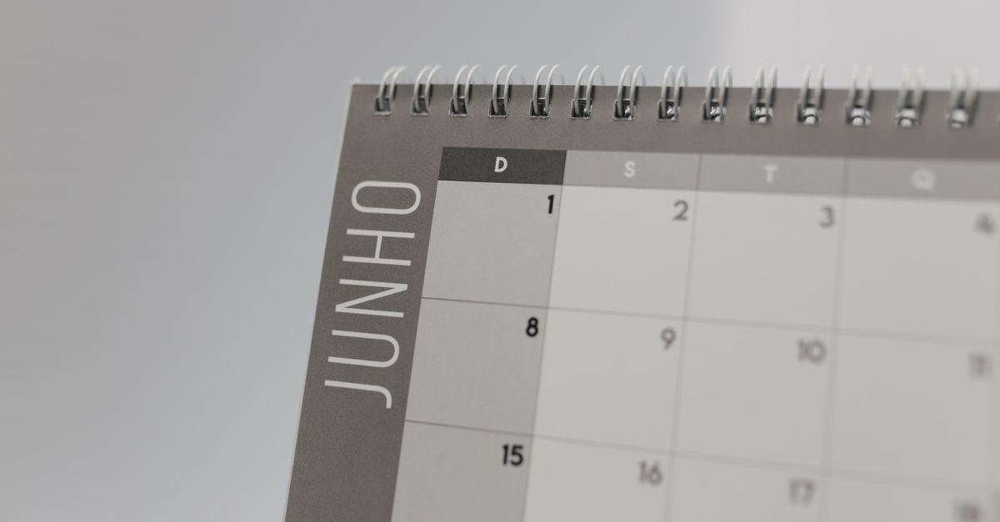

Mücbir sebep ilan edilince ne oluyor? Vergi ve prim süreleri durur
Deprem, Vergi Usul Kanunu bakımından mücbir sebeptir. Mücbir sebep hâli süresince vergi ödevlerine ilişkin süreler işlemez; SGK tarafında da erteleme düzenlemeleri gündeme gelir.

Mücbir sebep hâli sürdüğü sürece vergi ödevlerine ilişkin süreler işlemez; hâl ortadan kalktığında süreler kaldığı yerden devam eder.
Afetten sonra en hızlı yayılan bilgi "vergiler silindi" olur. Doğrusu daha dar ama yine de kıymetlidir: deprem mücbir sebeptir ve mücbir sebep süresince vergi ödevlerine ilişkin süreler işlemez.
Silinme değil, durma. Bu ayrımı bilmek, sonradan gecikme faiziyle karşılaşmayı önler.
Mücbir sebep nedir, ne yapar?
Vergi Usul Kanunu, yer sarsıntısını mücbir sebep hâlleri arasında sayar; mücbir sebebin devamı süresince sürelerin işlemeyeceğini düzenler.
Pratik karşılığı üç maddedir:
- Beyan ve bildirim süreleri durur.
- Ödeme süreleri durur.
- Dava açma ve düzeltme talebi gibi süreler bakımından da mücbir sebep hükümleri
değerlendirilir.
Silme ile durdurma karıştırılmasın
Mücbir sebep borcu ortadan kaldırmaz. Borcun silinmesi (terkin), afet nedeniyle varlığının veya mahsulünün en az üçte birini kaybedenler için ayrıca değerlendirilen bir kurumdur ve karar gerektirir.
Terkin: borcun silinmesi
Afetler yüzünden varlıklarının veya mahsullerinin en az üçte birini kaybedenlerin, afete uğrayan gelir kaynaklarıyla ilgili kamu borçlarının kısmen veya tamamen terkin edilebileceği belirtilmektedir.
Bu, kendiliğinden işleyen bir sonuç değildir: kayıp oranının belgelenmesi ve karar alınması gerekir. Hasar tespit raporunuz, bu dosyanın omurgasıdır.
2023'te nasıl uygulanmıştı?
Hazine ve Maliye Bakanlığının, deprem tarihinden 31.07.2023 tarihine kadar 11 il için mücbir sebep hâli ilan ettiği belirtilmektedir. Bu bir emsaldir: kapsam, süre ve iller her afette yeniden belirlenir.
SGK tarafı: prim ve bildirim
İşveren ve sigortalı bakımından iki ayrı yük vardır: prim ödemesi ve bildirim (işe giriş, aylık prim hizmet belgesi). Afet hâllerinde her ikisi için de erteleme düzenlemeleri gündeme gelir; kapsam Kurumun o afete ilişkin duyurusuyla belirlenir.
İşyeriniz kapsam dışındaysa
Mücbir sebep ilanları il/ilçe bazlıdır. Kapsam dışında kalmış ama fiilen zarar görmüşseniz (örneğin çalışanlarınız veya defterleriniz afet bölgesindeyse) bireysel mücbir sebep başvurusu yapılabilir. Talebi yazılı verin, hasarı belgeleyin.
Erteleme bitince: asıl risk burada
Ertelemenin sağladığı rahatlama, biriken yükün aynı anda muaccel olmasıyla tersine dönebilir. Hâl ortadan kalktığında:
- Süreler kaldığı yerden işler.
- Ertelenen ödemeler için idarece bir takvim açıklanır.
- Bu takvim kaçırılırsa gecikme zammı işlemeye başlar.
Bu yüzden mücbir sebep ilanının bitiş tarihini öğrenip süre takviminize yazın. Erteleme haberini not edip bitişini not etmemek, en sık yapılan hatadır.
Emlak vergisi ayrı bir başlıktır
Yıkılan veya kullanılmaz hâle gelen bina için emlak vergisi mükellefiyetinin sona ermesi, mücbir sebepten bağımsız ve bildirim şartına bağlı bir konudur. Bildirim yapılmazsa tahakkuk devam eder. Ayrıntısı: deprem sonrası vergi ve emlak vergisi.
Kanuni dayanak
| Mevzuat | Ne diyor |
|---|---|
| 213 sayılı Vergi Usul Kanunu m.13 | Yer sarsıntısı (deprem) dâhil afetleri, vergi ödevlerinin yerine getirilmesine engel olan mücbir sebep hâlleri arasında sayar. |
| 213 sayılı Vergi Usul Kanunu m.15 | Mücbir sebep hâlinin devamı süresince sürelerin işlemeyeceğini düzenler. |
| 213 sayılı Vergi Usul Kanunu m.115 | Afet nedeniyle varlığının veya mahsulünün en az üçte birini kaybedenlerin kamu borçlarının terkin edilebilmesine imkân tanır. |
| 5510 sayılı Sosyal Sigortalar ve Genel Sağlık Sigortası Kanunu | Afet hâllerinde prim ve bildirim yükümlülüklerinin ertelenmesine ilişkin düzenlemelerin dayanağıdır. |
Sık sorulanlar
Mücbir sebep ilan edilmesi borcumu siler mi?
Hayır. Mücbir sebep, borcu silmez; süreleri durdurur. Borcun silinmesi ayrı bir kurumdur ve terkin şartlarının gerçekleşmesine bağlıdır.
Mücbir sebep kimler için geçerli olur?
İdare mücbir sebep hâlini genellikle il ve ilçe bazında ilan eder; 2023'te 11 il için deprem tarihinden 31.07.2023 tarihine kadar ilan edildiği belirtilmektedir. Kapsam dışında kalıp da fiilen mağdur olanlar bireysel başvuru yapabilir.
Beyannameyi yine de vermeli miyim?
Mücbir sebep süresince verilmesi gereken beyannameler ertelenir; ancak erteleme kapsamının hangi vergi türlerini içerdiği ilan metninde yazar. Kapsamı teyit etmeden 'nasılsa ertelendi' varsaymayın.
SGK primleri de erteleniyor mu?
Afet hâllerinde prim ödeme ve bildirim yükümlülüklerinin ertelenmesine ilişkin düzenlemeler gündeme gelir; kapsam ve süre Kurumun o afete ilişkin genelgesiyle belirlenir. İşyeriniz kapsamda değilse bireysel başvuru yolunu deneyin.
Mücbir sebep bitince ne olur?
Hâl ortadan kalktığında süreler kaldığı yerden işlemeye devam eder ve ertelenen ödemeler için idarece bir takvim açıklanır. Bu takvimi kaçırmak, ertelemenin sağladığı avantajı tümüyle ortadan kaldırır.
Bu konuyla ilgili araç
Süre takvimiDuran ve yeniden işleyen süreleri kendi tarihlerinizle takip edin.İlgili rehberler
 Vergi, prim ve borçlar
Deprem sonrası vergi: mücbir sebep, terkin ve yıkılan binanın emlak vergisi
Deprem mücbir sebep hâlidir ve süreler işlemez. Yıkılan bina için emlak vergisi mükellefiyeti ise çoğu zaman bildirime bağlı olarak sona erer.
Vergi, prim ve borçlar
Deprem sonrası vergi: mücbir sebep, terkin ve yıkılan binanın emlak vergisi
Deprem mücbir sebep hâlidir ve süreler işlemez. Yıkılan bina için emlak vergisi mükellefiyeti ise çoğu zaman bildirime bağlı olarak sona erer.
 Vergi, prim ve borçlar
Kredi ve kredi kartı borçları: erteleme bir hak mı, karar mı?
Deprem sonrası borç ertelemeleri kalıcı bir hak değil, düzenleyici kurum kararlarıdır. 2023'te uygulanan esnekliklerin ne olduğunu ve bugün ne yapılabileceğini ayrı ayrı anlatıyoruz.
Vergi, prim ve borçlar
Kredi ve kredi kartı borçları: erteleme bir hak mı, karar mı?
Deprem sonrası borç ertelemeleri kalıcı bir hak değil, düzenleyici kurum kararlarıdır. 2023'te uygulanan esnekliklerin ne olduğunu ve bugün ne yapılabileceğini ayrı ayrı anlatıyoruz.
 Çalışma hayatı ve iş yeri
Deprem işi durdurunca: yarım ücret, haklı fesih ve kısa çalışma
Deprem zorlayıcı sebeptir. İş bir haftadan fazla durursa hem işçinin hem işverenin derhal fesih hakkı doğar; duran bir haftaya kadarki süre için işveren yarım ücret öder.
Çalışma hayatı ve iş yeri
Deprem işi durdurunca: yarım ücret, haklı fesih ve kısa çalışma
Deprem zorlayıcı sebeptir. İş bir haftadan fazla durursa hem işçinin hem işverenin derhal fesih hakkı doğar; duran bir haftaya kadarki süre için işveren yarım ücret öder.